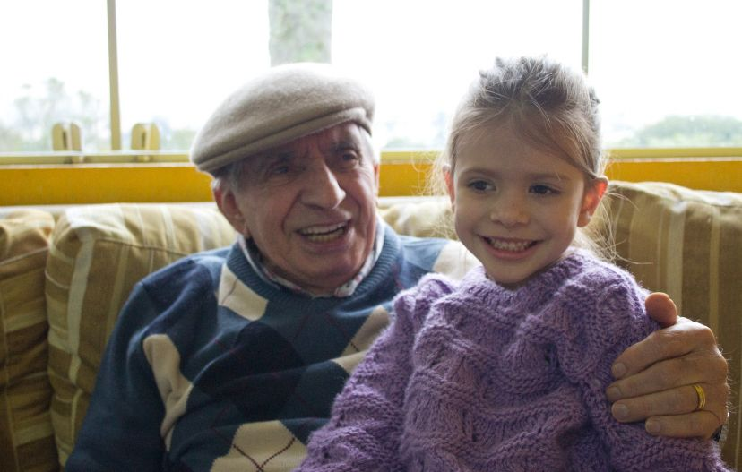

Foto dos integrantes Sampaio
Meu Pai
Minha Mãe
Minha Irmã
Meu Irmão

Meu Avô (i.m)
Minha Avó

Nina e Oddy
Margarida
Nosso cantinho digital onde guardamos momentos especiais!
A família Sampaio tem raízes Italiana, Espanhola e Portuguesa.
A Margarida, é a maia brincalhona. Ela adora perturbar o Oddy. A Nina é a mais dorminhoca!
